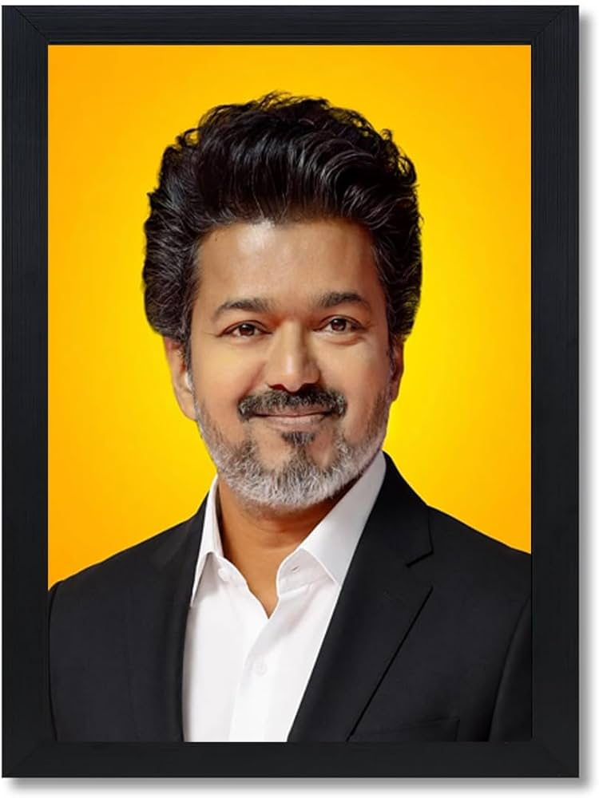
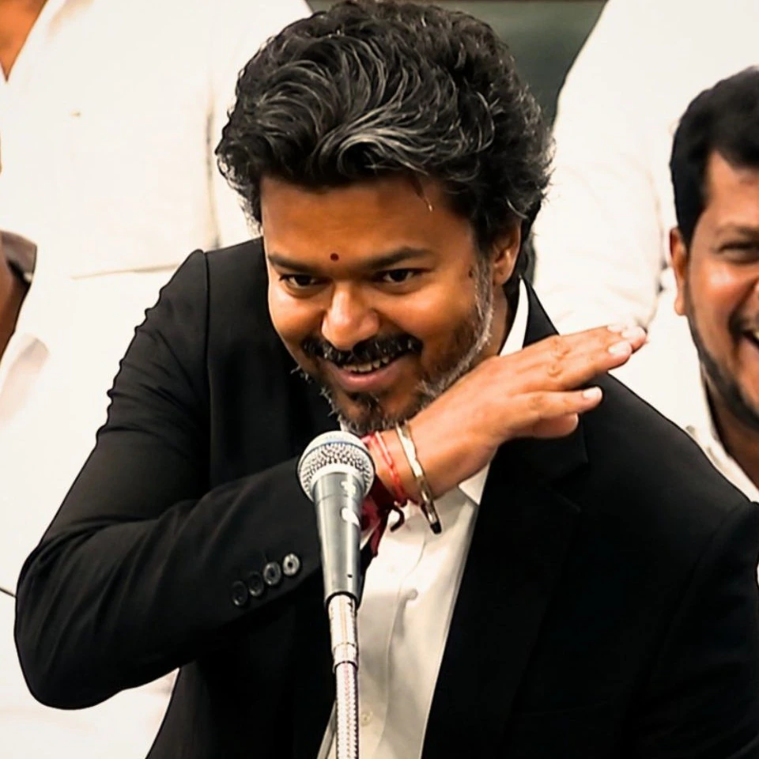

Chandrasekaran Joseph Vijay was born on 22 June 1974 in Madras. His father, Chandrasekaran, is a film director and his mother, Shoba, is a playback singer and vocalist. His father is a lapsed Catholic and his mother is an adherent of Hinduism. Vijay had a sister, Vidhya, who died when she was two years old. Vijay did his schooling initially at Fathima school, Kodambakkam and later at Balalok school, Virugambakkam. He pursued a bachelor's degree in visual communication from Loyola College, but dropped out early to focus on his acting career.
| Year | Growth |
|---|---|
| 1984-2002 | Debut and transition to lead roles |
| 2003-2011 | Established actor |
| 2012-2022 | Commercial success and stardom |
| 2023-2026 | Continued success |
| Year | Song | Movie |
|---|---|---|
| 1994 | Bombay City Sukkha Rotti | Rasigan |
| 2005 | Vaadi Vaadi | Sachein |
| 2012 | Google Google | Thuppakki |
| 2015 | Yaendi Yaendi | Puli |
| 2016 | Selfie Pulla | Kaththi |
| Year/Date | Event | Details |
|---|---|---|
| 2009 | Vijay Makkal Iyakkam Launched | Vijay launched his fan club Vijay Makkal Iyakkam (VMI). |
| 2011 | Tamil Nadu Assembly Elections | Vijay Makkal Iyakkam supported the AIADMK-led alliance during the elections. |
| February 2019 | Citizenship Amendment Act (CAA) | Vijay expressed opposition to the Citizenship Amendment Act (CAA) 2019, stating that it could disrupt the nation's social and religious harmony. |
| 2022 | Tamil Nadu Local Elections | Members of Vijay Makkal Iyakkam contested the elections and won 115 seats. |
| 2 February 2024 | Political Party Launch | Vijay officially launched his political party, Tamilaga Vettri Kazhagam (TVK). |
| 27 September 2025 | Karur Political Rally | A crowd crush at Vijay's political rally in Karur resulted in 41 deaths. Vijay expressed condolences and announced ex-gratia compensation for the families of the deceased and injured. |
| October 2025 | Supreme Court Order | The Supreme Court of India transferred the Karur crowd crush investigation to the Central Bureau of Investigation (CBI) despite objections from the Tamil Nadu Government. |
| 12 & 19 January 2026 | CBI Investigation | Vijay was questioned twice by the CBI at its Delhi Headquarters regarding the Karur rally incident. |
| March 2026 | Third CBI Questioning | Vijay appeared for a third round of questioning at the CBI Headquarters, Delhi. |
| 30 January 2026 | NDTV Interview | In his first national media interview after entering politics, Vijay stated that his political role models are M. G. Ramachandran, J. Jayalalithaa, and M. Karunanidhi. |
